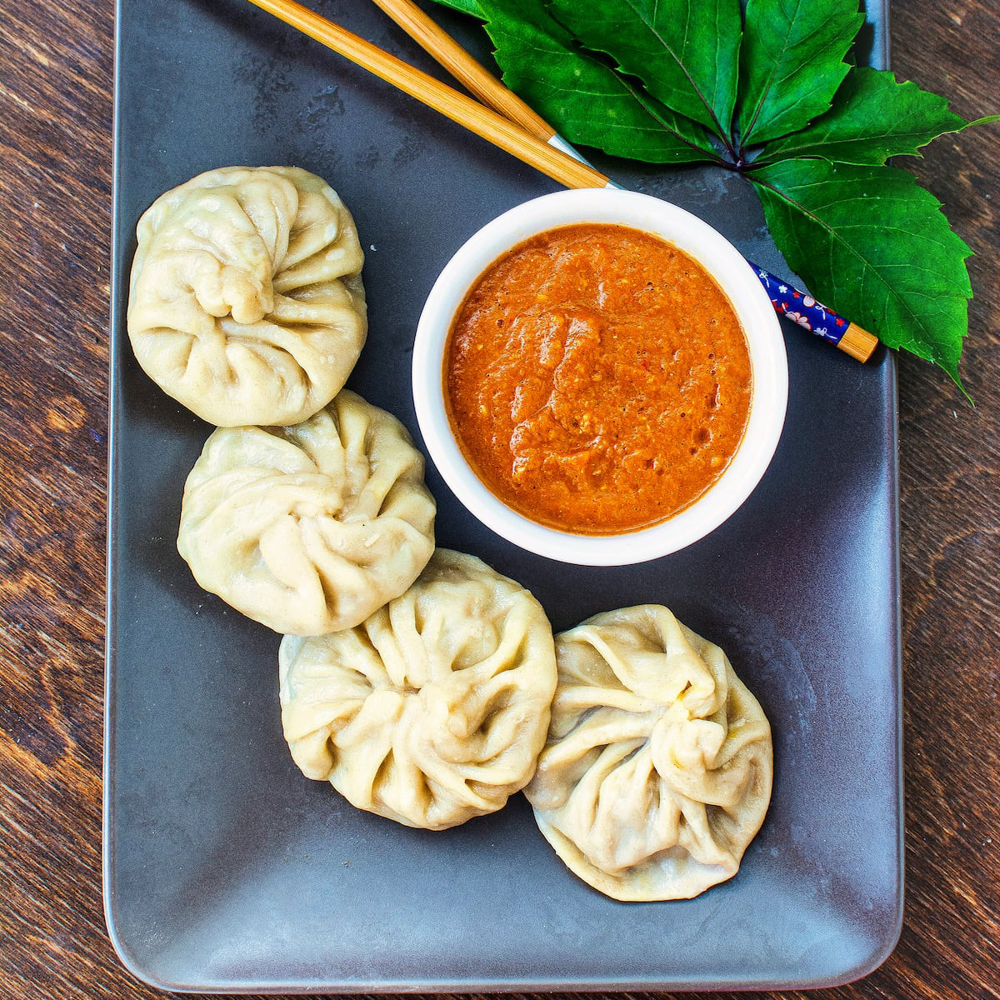

Momos are a type of steamed dumpling originating from Tibet and Nepal, eventually becoming one of the most beloved street foods across South Asia. They consist of a simple dough made from flour and water, which is rolled thin and filled with a variety of ingredients, such as seasoned minced meat, finely chopped vegetables, or even cheese. The magic of a momo lies in the folding technique, where the dough is pleated into beautiful round or half-moon shapes to seal in the juices before being steamed, fried, or served in a warm soup.
The experience of eating momos is incomplete without the signature "achar" or dipping sauce, which is typically a spicy and tangy blend of tomatoes, sesame seeds, and red chilies. While the traditional steaming method keeps the dumplings light and tender, many modern variations have emerged, including "C-momos" (chili momos) tossed in a spicy gravy and "Kothey" momos which are pan-fried for a crispy bottom. Their rise from a regional specialty to a global favorite is a testament to their versatility and the universal appeal of a perfectly hand-crafted dumpling.